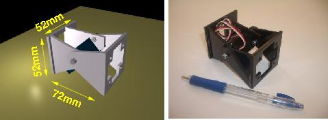
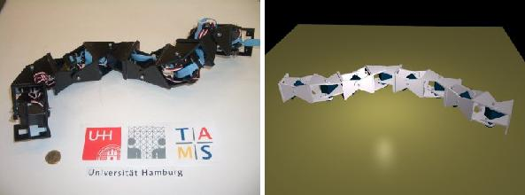
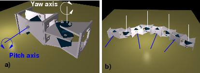

Next: 2 Control hardware Up: 3 An overview of Previous: 3 An overview of


Next: 2
Control hardware Up:
3
An overview of Previous:
3
An overview of
|
 |
|
Figure: The Y1 module. A very cheap and easy to build module. |
A pitch-yaw connecting modular
robot has been developed for locomotion testings. The prototype is
based on the Y1 module (Fig
 ),
which has been also used for building a worm-like robot[15]
and some minimal configurations[16]
in previous work. It is a very cheap and easy to build module. It
only have one degree of freedom, actuated by an RC servo. There are
two connection surfaces for attaching another modules. The rotation
range is 180 degrees.
),
which has been also used for building a worm-like robot[15]
and some minimal configurations[16]
in previous work. It is a very cheap and easy to build module. It
only have one degree of freedom, actuated by an RC servo. There are
two connection surfaces for attaching another modules. The rotation
range is 180 degrees.
|
 |
|
Figure: The pitch-yaw-connecting modular robot built to test its locomotion capabilities (Image on the left). It is composed of 8 linked modules (image on the right). |
The robot consists of eight modules
connected in a chain (Fig.
 ).
Four of them rotate around the pitch axes and the other four around
the yaw axes respectively (The basic connection is shown in Fig.
).
Four of them rotate around the pitch axes and the other four around
the yaw axes respectively (The basic connection is shown in Fig.
 ).
Two adjacent modules are connected rotating 90 degrees so that one
moves around the pitch axis and the other around the yaw axis.
).
Two adjacent modules are connected rotating 90 degrees so that one
moves around the pitch axis and the other around the yaw axis.
|
 |
|
Figure: a) Two Y1 modules in a 90 degrees connection. The modules rotates around the pitch and yaw axes respectively. b) The robot is made of four of this basic unions between the modules. |


Next: 2 Control
hardware Up: 3 An
overview of Previous: 3
An overview of